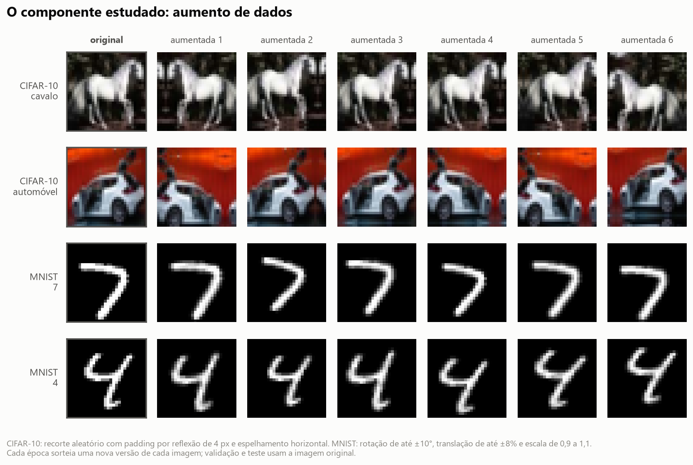
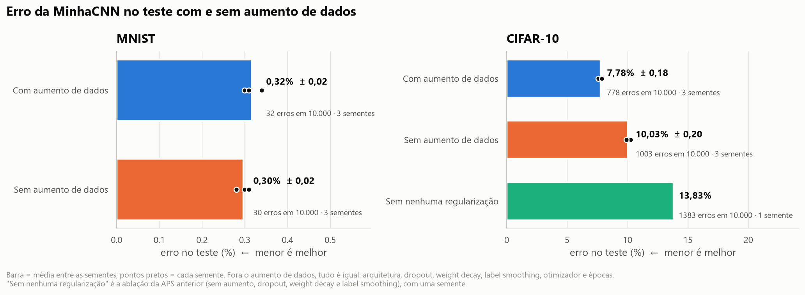
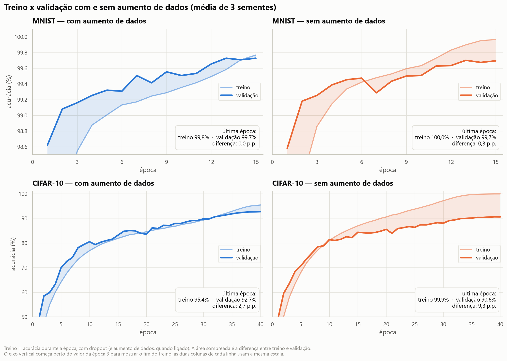
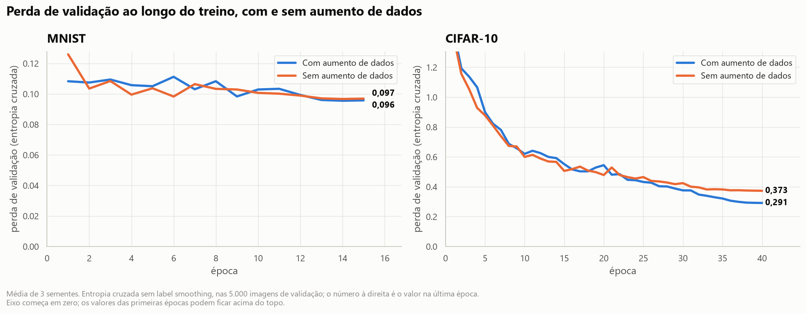
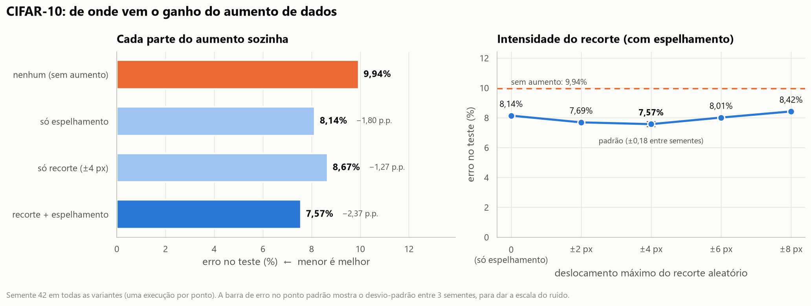
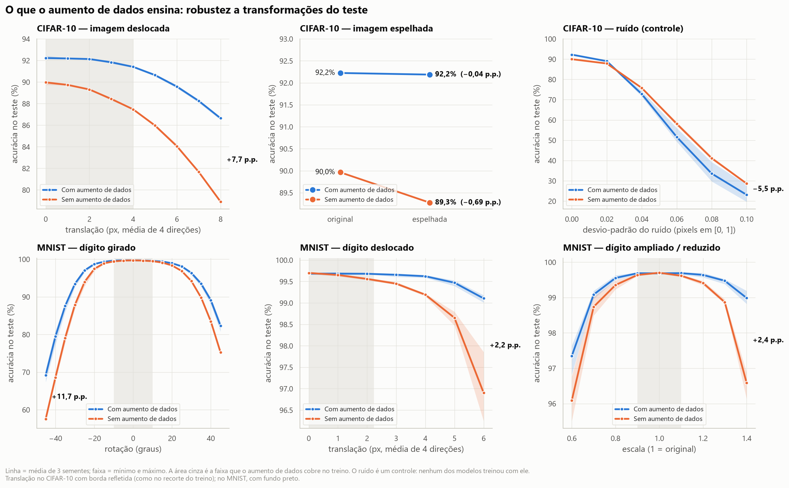
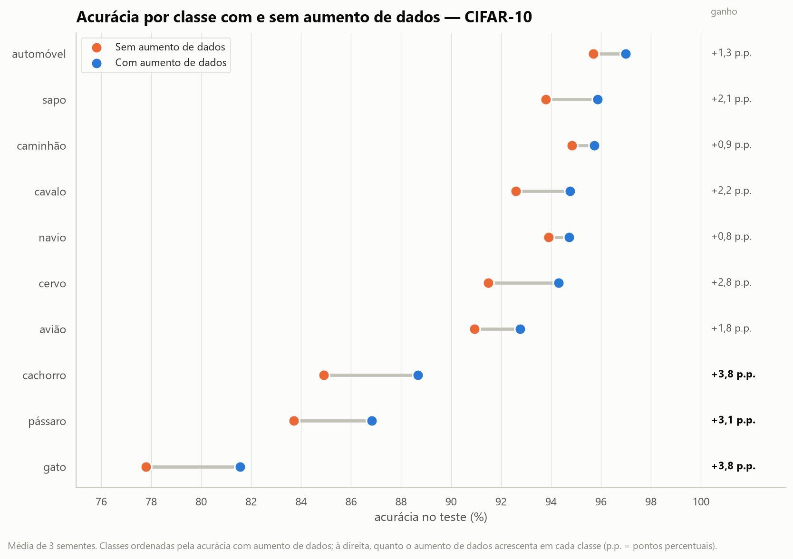

Introdução à Aprendizagem Profunda — Atividade Prática Supervisionada (APS)
Estudo de Ablação — continuação da APS de Redes Convolucionais
Integrante: João Henrique dos Santos Silva
Repositório: https://github.com/soninhoxs/APS_CNN_MNIST_CIFAR10
Outubro de 2026
Fizemos um estudo de ablação do aumento de dados (data augmentation) na MinhaCNN, a CNN própria da APS anterior. Treinamos a mesma rede com e sem esse componente, mantendo todo o resto igual, com 3 sementes por configuração e as mesmas métricas da APS anterior.
Escolhemos o aumento de dados (data augmentation) usado no treino da MinhaCNN, a CNN de 1,18 milhão de parâmetros da APS anterior. A cada época, cada imagem de treino passa por uma transformação aleatória antes de entrar na rede; validação e teste usam sempre a imagem original.
Recorte e espelhamento são o aumento de dados clássico das CNNs desde a AlexNet (Krizhevsky et al., 2012); pequenas transformações afins em dígitos manuscritos já eram usadas por Simard et al. (2003).

Por que este componente:
Hipóteses, escritas antes dos resultados: (H1) sem o aumento de dados o erro de teste sobe bastante no CIFAR-10 e pouco no MNIST, que já está perto do limite; (H2) sem ele, a rede decora o treino e a diferença entre treino e teste cresce; (H3) o ganho vem da robustez às transformações usadas no treino (deslocamento, espelhamento, rotação), e não de uma robustez geral — um modelo treinado com aumento de dados não deveria ser mais robusto a ruído, transformação que ele nunca viu.
Usamos o mesmo conjunto de dados, a mesma divisão e as mesmas métricas da APS anterior. Só o aumento de dados muda entre as duas configurações:
| Item | Com aumento de dados | Sem aumento de dados |
|---|---|---|
| Arquitetura | MinhaCNN, 1,18 M parâmetros | igual |
| Batch Normalization | sim | sim |
| Dropout espacial / dropout na cabeça | 0,1 · 0,1 · 0,2 / 0,3 | igual |
| Weight decay | 5×10⁻⁴ | igual |
| Label smoothing | 0,1 | igual |
| Otimização | SGD Nesterov, One-Cycle até 0,1, lotes de 128, fp16 | igual |
| Épocas | 15 (MNIST) e 40 (CIFAR-10) | igual |
| Aumento de dados | recorte + espelhamento (CIFAR-10); rotação, translação e escala (MNIST) | nenhum |
| Sementes | 42, 43, 44 | 42, 43, 44 |
Ao todo foram 15 treinos novos, cerca de 75 minutos de GPU numa RTX 3050 Laptop (6 GB).
| Dataset | Configuração | Acurácia teste | Erros (de 10.000) | F1 macro | Acc. treino | Gap | Perda teste |
|---|---|---|---|---|---|---|---|
| MNIST | Com aumento de dados | 99,68% ± 0,02 | 32 ± 2 | 0,9968 | 99,84% | 0,15 p.p. | 0,097 |
| MNIST | Sem aumento de dados | 99,70% ± 0,02 | 30 ± 2 | 0,9970 | 99,97% | 0,26 p.p. | 0,097 |
| CIFAR-10 | Com aumento de dados | 92,22% ± 0,18 | 778 ± 18 | 0,9219 | 98,19% | 5,96 p.p. | 0,303 |
| CIFAR-10 | Sem aumento de dados | 89,97% ± 0,20 | 1.003 ± 20 | 0,8992 | 100,00% | 10,03 p.p. | 0,389 |
| CIFAR-10 | Sem nenhuma regularização (APS anterior) | 86,17% | 1.383 | 0,8616 | 100,00% | 13,83 p.p. | 0,765 |
Média ± desvio-padrão de 3 sementes (42, 43 e 44); a última linha tem uma semente. Acc. treino é medida no treino sem aumento de dados e sem dropout; gap = acc. treino − acc. teste. Valores de cada semente em results/ablacao/resumo_ablacao.csv.

No CIFAR-10 o componente faz muita diferença. Sem o aumento de dados a acurácia cai 2,26 p.p. (92,22% → 89,97%) e o número de erros sobe de 778 para 1.003: tirar o componente faz a rede errar 29% a mais. A queda é dez vezes maior que a variação entre sementes (desvio-padrão de 0,2 p.p.) e as três sementes "sem" ficaram abaixo das três "com". O teste de McNemar compara os dois modelos imagem a imagem, nas mesmas 10.000 fotos:
| Dataset | Semente | Só o modelo com aumento acerta | Só o modelo sem aumento acerta | p (McNemar) |
|---|---|---|---|---|
| CIFAR-10 | 42 | 485 | 248 | 1,4 × 10⁻¹⁸ |
| CIFAR-10 | 43 | 486 | 247 | 7,3 × 10⁻¹⁹ |
| CIFAR-10 | 44 | 451 | 250 | 2,8 × 10⁻¹⁴ |
| MNIST | 42 | 13 | 17 | 0,58 |
| MNIST | 43 | 11 | 13 | 0,84 |
| MNIST | 44 | 12 | 12 | 1,00 |
No CIFAR-10, em cada semente, as imagens que só o modelo com aumento de dados acerta são quase o dobro das que só o modelo sem ele acerta. O teste t de Welch sobre as três sementes dá o mesmo veredito (p = 0,0001).
No MNIST não há diferença. As médias diferem 0,02 p.p. (2 imagens em 10.000) a favor do modelo sem aumento de dados, bem dentro do ruído: o intervalo de confiança de 95% de uma acurácia de 99,7% em 10.000 imagens é de ±0,11 p.p., e nenhum McNemar chega perto de ser significativo (p ≥ 0,58). A hipótese H1 se confirmou, com um MNIST ainda mais saturado do que esperávamos: ali o componente não ajuda nem atrapalha a acurácia de teste. A seção 4.2 mostra o que ele muda no MNIST.

Sem aumento de dados, a MinhaCNN decora o CIFAR-10: a acurácia de treino chega a 100,00% nas três sementes, enquanto a de teste fica em 90%. Não é surpresa: redes desse porte conseguem decorar até rótulos sorteados ao acaso (Zhang et al., 2017). O gap dobra para 10,0 p.p., contra 6,0 com o componente — hipótese H2 confirmada. Com aumento de dados a rede quase nunca vê a mesma versão de uma imagem duas vezes; depois de 40 épocas ela acerta 98,2% do treino limpo e a melhor época de validação é a última (época 40 em duas das três sementes): ela ainda estava aprendendo quando o treino acabou.
No MNIST o efeito é pequeno: sem aumento de dados a rede chega a 99,97% no treino e o gap passa de 0,15 para 0,26 p.p., mas a validação fica igual. O MNIST tem 55 mil imagens de um problema simples, e o dropout, o weight decay e o label smoothing já seguram o sobreajuste.

A perda de validação conta a mesma história. No CIFAR-10 as duas curvas andam juntas por cerca de 25 épocas e depois se separam: sem aumento de dados a perda de validação passa a cair bem mais devagar, enquanto a rede continua melhorando no treino até decorá-lo (99% de acerto no treino por volta da época 33). A perda não chega a subir, como subia no modelo sem nenhuma regularização da APS anterior (perda de teste de 0,765): o label smoothing, o dropout e o weight decay, que continuam ligados, impedem que a rede fique confiante demais nos erros.
| MinhaCNN no CIFAR-10 (semente 42) | Acurácia teste | Queda acumulada |
|---|---|---|
| Com todas as técnicas de regularização | 92,43% | — |
| Sem aumento de dados (dropout, weight decay e label smoothing ligados) | 90,06% | −2,37 p.p. |
| Sem nenhuma regularização | 86,17% | −6,26 p.p. |
A APS anterior mediu que a regularização valia 6,3 p.p. no CIFAR-10. Tirar só o aumento de dados custa 2,4 desses pontos: 38% da queda. Os outros 62% vêm de dropout, weight decay e label smoothing juntos. O aumento de dados é importante, mas não é a única técnica que importa.
Os gráficos desta seção mostram de onde vem a influência do componente: qual parte do aumento de dados rende mais, quanto aumentar e o que exatamente a rede aprende com ele.

| CIFAR-10 (semente 42) | Acurácia teste | Ganho sobre "nenhum" | Acc. treino | Gap |
|---|---|---|---|---|
| Nenhum aumento | 90,06% | — | 100,00% | 9,94 p.p. |
| Só espelhamento | 91,86% | +1,80 p.p. | 99,88% | 8,02 p.p. |
| Só recorte (±4 px) | 91,33% | +1,27 p.p. | 99,79% | 8,46 p.p. |
| Recorte ±2 px + espelhamento | 92,31% | +2,25 p.p. | 98,68% | 6,37 p.p. |
| Recorte ±4 px + espelhamento (padrão) | 92,43% | +2,37 p.p. | 98,16% | 5,73 p.p. |
| Recorte ±6 px + espelhamento | 91,99% | +1,93 p.p. | 97,40% | 5,41 p.p. |
| Recorte ±8 px + espelhamento | 91,58% | +1,52 p.p. | 96,87% | 5,29 p.p. |
Uma execução por linha. Como referência, o desvio-padrão entre sementes da configuração padrão é 0,18 p.p.: diferenças menores que ~0,4 p.p. nesta tabela não são confiáveis.
A acurácia no teste original só mostra parte do efeito. Para ver o que a rede aprendeu, avaliamos os 12 modelos principais no conjunto de teste transformado: deslocado, espelhado, girado, ampliado ou reduzido. Como controle, usamos ruído gaussiano, transformação que nenhum dos modelos viu no treino.

| Teste transformado | Com aumento | Sem aumento | Diferença |
|---|---|---|---|
| CIFAR-10 original | 92,22% | 89,96% | +2,3 p.p. |
| CIFAR-10 espelhado | 92,19% | 89,27% | +2,9 p.p. |
| CIFAR-10 deslocado 4 px | 91,41% | 87,47% | +3,9 p.p. |
| CIFAR-10 deslocado 8 px | 86,64% | 78,91% | +7,7 p.p. |
| CIFAR-10 com ruído σ = 0,06 (controle) | 51,63% | 58,10% | −6,5 p.p. |
| MNIST original | 99,68% | 99,70% | −0,02 p.p. |
| MNIST girado 45° | 82,27% | 75,22% | +7,1 p.p. |
| MNIST girado −45° | 69,20% | 57,54% | +11,7 p.p. |
| MNIST deslocado 6 px | 99,11% | 96,90% | +2,2 p.p. |
| MNIST ampliado 1,4× | 98,99% | 96,58% | +2,4 p.p. |
| MNIST com ruído σ = 0,2 (controle) | 62,56% | 76,53% | −14,0 p.p. |
Média de 3 sementes. Deslocamento = média das 4 direções; no CIFAR-10 com borda refletida (como no recorte do treino) e no MNIST com fundo preto. σ é o desvio-padrão do ruído, com pixels entre 0 e 1.

O aumento de dados melhora todas as 10 classes do CIFAR-10. O ganho é maior justamente nas classes mais difíceis, os animais: gato (77,8% → 81,6%) e cachorro (84,9% → 88,7%) ganham 3,8 p.p. cada, pássaro 3,1 e cervo 2,8. Nos veículos o ganho fica entre 0,8 e 1,8 p.p. Animais aparecem em mais poses, posições e enquadramentos do que veículos; o recorte e o espelhamento multiplicam justamente essas variações. Entre os pares mais confundidos, o efeito é desigual: a confusão gato → cachorro, a mais frequente na APS anterior, quase não muda (91 → 90 imagens por semente), mas a contrária, cachorro → gato, cai 23% (76 → 59). As classes que mais ganham com o aumento de dados são as mesmas em que a ResNet18 pré-treinada levava mais vantagem na APS anterior. Nos dois casos, o que falta à MinhaCNN treinada do zero é ver mais variações dos animais.
No CIFAR-10, o aumento de dados é um componente essencial da MinhaCNN. Ele vale 2,3 p.p. de acurácia (22% menos erros), reduz o sobreajuste pela metade e melhora todas as classes, com resultados consistentes nas três sementes. E quase não custa nada: não acrescenta parâmetros, não muda a velocidade de inferência e deixa cada época de treino cerca de 5% mais lenta (8,4–8,8 s contra 8,2–8,3 s), porque as transformações rodam na GPU.
Mas não é "o" componente da regularização. Ele explica 38% da queda que a APS anterior via ao desligar toda a regularização. Os outros 62% vêm de dropout, weight decay e label smoothing. Esperávamos uma fatia maior; a ablação mostrou que a MinhaCNN depende do conjunto de técnicas, não de uma só.
No MNIST, ele não melhora a acurácia de teste — e nós o manteríamos assim mesmo. O teste do MNIST tem as mesmas condições do treino (dígitos centralizados e do mesmo tamanho), então ensinar a rede a lidar com rotações e deslocamentos não muda o placar. Mas o modelo com aumento de dados é bem mais robusto a dígitos girados, deslocados ou de outro tamanho, que é o que acontece fora do conjunto de dados. Se fôssemos julgar só pela tabela de acurácia, concluiríamos errado que o componente é inútil no MNIST.
O aumento de dados funciona porque é conhecimento sobre o problema, não porque é regularização genérica. Cada transformação diz à rede o que não muda a classe (Shorten e Khoshgoftaar, 2019): espelhar um gato continua sendo um gato, mas espelhar um "2" não é mais um "2" — por isso não usamos espelhamento no MNIST. Os experimentos mostram os dois lados: o ganho aparece exatamente nas transformações treinadas, transformações fortes demais (recorte de ±8 px) passam a atrapalhar, e o componente não protege contra o que não foi treinado (ruído). Nossa conclusão é que o aumento de dados deve ficar na MinhaCNN, escolhido de acordo com as variações que o problema realmente tem.
O que faríamos a seguir:
O estudo de ablação está no mesmo repositório da APS anterior, na branch ablacao-aumento-dados:
| Arquivo | Função |
|---|---|
ablacao_aumento_de_dados.ipynb |
notebook executado com o estudo completo: comandos de treino, tabelas, testes estatísticos e gráficos |
run_ablation.py |
lista os 15 treinos da ablação, executa os que faltam e roda a análise |
src/train.py |
treino de um experimento; ganhou as opções --no-aug, --crop-pad, --no-flip e --subdir |
src/data.py |
aumento de dados na GPU; make_augment aceita a intensidade do recorte e liga/desliga o espelhamento |
src/ablation.py |
tabelas, estatística, testes de robustez e figuras do estudo |
results/ablacao/ |
métricas, histórico e predições de cada treino; resumo_ablacao.csv, estatistica_ablacao.json e robustez.json |
figures/ablacao_*.png |
as figuras deste documento |
logs/ablacao/ |
saída de cada treino |
Para reproduzir: python download_data.py, python run_all.py (APS anterior, que gera a semente 42 com aumento) e python run_ablation.py. Para refazer só a análise: python -m src.ablation. Este documento é gerado com python -m src.make_report --src relatorio/ablacao.md --out Relatorio_Ablacao_CNN.